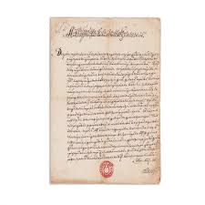
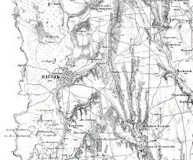
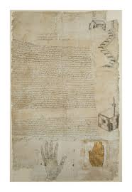
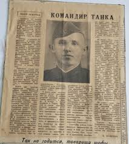

Home
Expozitie
Colecții
Vizite
Contacte
Documente Istorice

Hrisov Domnesc, 1800
Document oficial emis de Cancelaria Moldovei prin care se confirmau proprietăți funciare în ținutul Cahulului, scris în chirilică moldovenească.
1800 · Cancelaria Moldovei

Harta Județului Cahul, 1850
Hartă administrativă rusă a județului Cahul, realizată după anexarea Basarabiei în 1812, cu notații în limbile rusă și română.
1850 · Administrația imperială rusă

Document Otoman, sec. XVIII
Firman otoman referitor la controlul raialei Cahul, redactat în limba osmanlâ, cu sigiliul oficial al Înaltei Porți.
Sec. XVIII · Imperiul Otoman

Ziar Local „Cahulul", 1920
Număr din 1920 al primului ziar local din perioada interbelică, relatând despre viața culturală și politică a județului Cahul în România Mare.
1920 · Presa interbelică românească
Înapoi
Colecțiile Muzeului de Istorie Cahul · Str. Independenței 2
Cahul, 3901 · Tel: +373 299 2-34-56 · info@muzeucahul.md